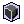

|
7.6 表格式報表 (Table report mode) 新增、編輯、刪除表格列印行 (create、update、delete table and column) 表格式報表屬性 (table report properties) 表格列印行屬性設定(table column properties)
表格式報表 (table report mode) 是 jLIVE Builder™ 報表的延伸模式。表格式報表的列印原則、設計方式與 jLIVE Builder™ 一般列印頁相同，其中唯一的不同是報表表身區 (content area) 以表格元件取代，表頭及表尾列印區可以與一般列印一樣配置報表列印元件，並可以在表格屬性設定中，選擇在何時列印表頭及表尾列印區。 表格式報表 (table report mode)，將列印資料以行列方式列印，每列 (row) 的列印高度 (height) 是根據資料長度及所選的字型而定，資料在當頁無法列印完時，其餘資料將會轉至下頁列印。每筆 (行) 資料列印前，設計師可以設定表格表頭 (table header) 是不印、首筆、每筆、換頁列印。 報表表頭列印區 (header area) 及報表表尾列印區 (footer area) ，設計師可以設定為不印、首頁、每頁、尾頁列印。報表表頭列印區 (header area) 不印時，當頁表格將由紙張上緣距，開始列印；報表表尾列印區 (footer area) 不印時，當頁表格將列印至紙張下緣距。
在 jLIVE Builder™ 報表設計平台，按下報表屬性設定鍵，在報表屬性設定視窗中選取【特殊】頁設定，核選 (check) 表格式報表後，按下表格式報表屬性設定，系統會開啟表格式報表屬性設定作業視窗。使用表格式報表，報表表身列印區 (content area) 除了表格外將不允許配置列印元件，按下報表屬性設定視窗的確定或套用時，如果報表表身列印區已配置列印元件，系統將會詢問並移除配置於報表表身列印區的列印元件。
新增、編輯、刪除表格列印行 (create、update、delete table and column)
設計師可以在報表屬性設定視窗中選取【特殊】頁設定，核選 (check) 表格式報表後，按下表格式報表屬性設定，開啟格式報表屬性設定作業。如果只核選
(check)
表格式報表，並未隨即執行設定或未設定任何列印行，當還回報表設計平台時，系統會提示目前為表格式報表模式，設計師可以在表身列印區雙擊滑鼠，開啟格式報表屬性設定作業。
設計師亦可按下滑鼠右鍵，選擇編輯表格屬性或新增列印行。
在列印行
(column) 區域中按下按下滑鼠右鍵，可以選擇編輯表格屬性或新增列印行。
在列印行
(column) 區域中雙擊滑鼠，可以直接開啟該列印行的屬性作業視窗。
表格式報表屬性 (table report properties)
紙張上緣距 (top offset)： 當報表表頭列印區不印時，當頁表格將由紙張上緣距，開始列印。
紙張下緣距 (bottom offset) ：當報表表尾列印區不印時，當頁表格將列印至紙張下緣距。
框線
(line)
選取列印表格框線，並可按下右方設定鍵，設定線段屬性。
框線屬性設定 (line properties)
列印行 (column)
表格列印行屬性設定(table column properties)
表格列印行
(column) 分為表格表頭 (table header) 及行列印格 (table column cell)，除了共用行寬 (column width)
外，所有可以設定的屬性與選擇項皆相同，設計師可以分別設定其值。
Copyright © 2001~ 2004 Probe Technology . All Rights Reserved. Questions, comments, and suggestions to Service@probe.com.tw |